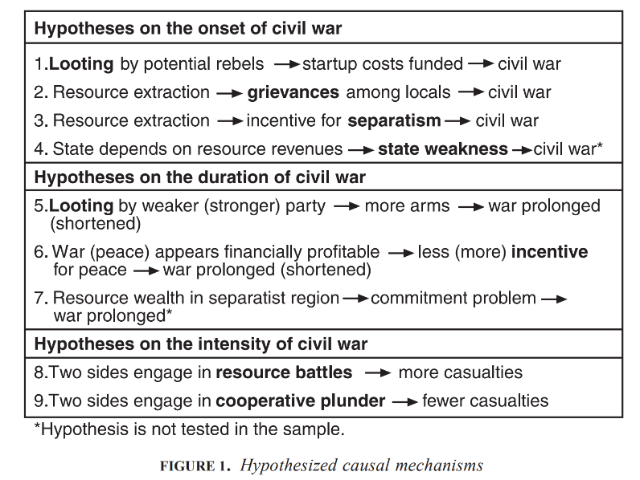
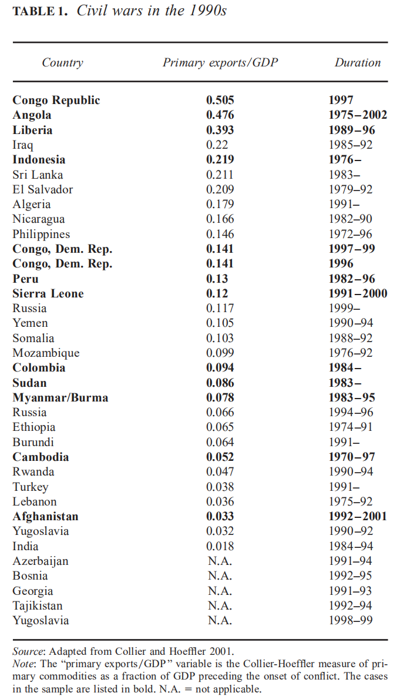
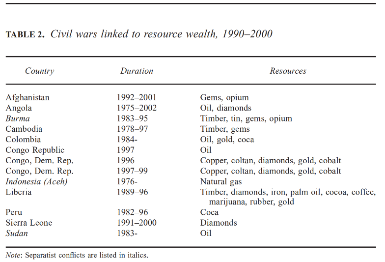
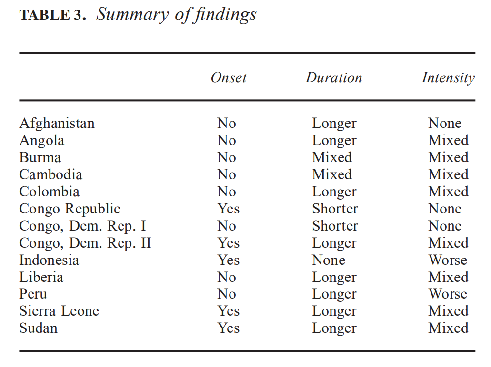
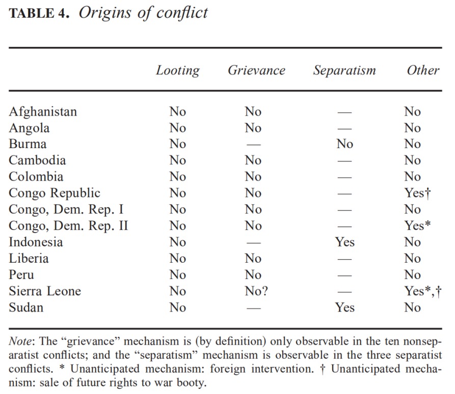
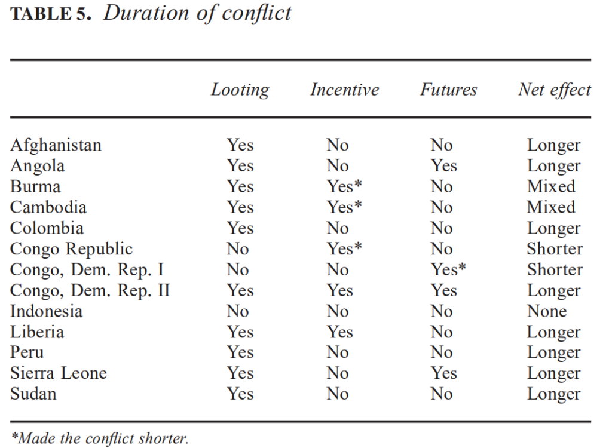
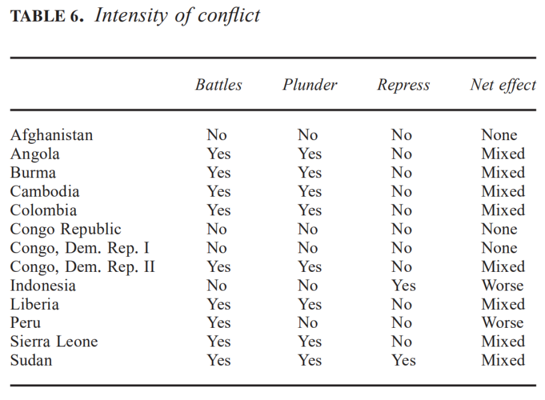
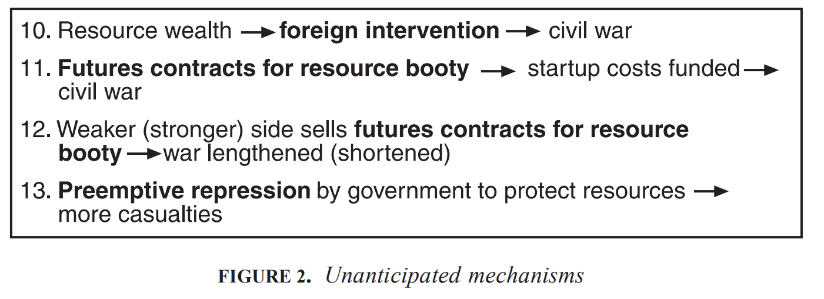

收录于合集
#《国际关系前沿》2021年第12期 22 个
#国际安全 4 个

作品简介
作者： 迈克尔·罗斯（Michael L. Ross），加州大学洛杉矶分校政治学系和环境与可持续发展研究所教授，并在世界银行、收入观察研究所（Revenue Watch Institute）等组织担任顾问。研究方向为气候政治、资源政治、内战等。
编译： 杨影淇（国政学人编译员，南京大学国际关系研究院）
来源： Michael L. Ross, “How Do Natural Resources Influence Civil War? Evidence from Thirteen Cases,” International Organization , Vol. 58, No. 1, 2004, pp. 35-67.
归档： 《国际关系前沿》2021年第12期，总第39期。
内容摘要
尽管有研究发现自然资源与内战密切相关，但作者认为这种相关性背后的因果机制并没有得到清晰的说明。为了充分探明该问题，作者对 “资源如何影响冲突” 进行了7种假设，并考察了从20世纪末到21世纪初发生的13场内战。结果发现，被提及最为广泛的 “劫掠”（looting）机制 和 “怨恨”（grievance）机制 可能并不有效（valid）； 石油、非燃料矿物和毒品 与冲突有因果关系，但 合法的农产品 与冲突无关；资源财富通过 多种因果机制 与内战相关联，其中包括了既有研究未发现的另外4种机制。
文章导读
01
引言
有很多研究发现自然资源与内战关联密切。如科利尔（Collier）和霍弗勒（Hoeffler）认为，严重依赖初级产品出口的国家比资源贫乏的国家更容易发生内战。费伦（Fearon）等人发现石油出口国更可能遭受内战的威胁。费伦的研究还表明，某些类型的资源（如宝石和毒品）往往会延长战争的时间。多伊尔（Doyle）和桑巴尼斯（Sambanis）也证明，当内战发生在依赖初级产品出口的国家时将更难结束。比海于格（Buhaug）和盖茨（Gates）则认为位于冲突地区的矿产资源往往会扩大冲突的地理范围。
大多数学者对自然资源为什么会对冲突产生这些影响几乎没有一致意见。因此，本文致力于明确资源与内战之间的因果联系机制，从而使现有的“自然资源—内战”理论更加完整。研究结果也将有利于解决以下三个问题：
首先，有助于克服对“自然资源—内战”关系的内生性与虚假性的忧虑。 如自然资源导致内战的因果关系可能相反，即是内战的爆发才导致了一个国家对资源的依赖。自然资源与内战的相关性也可能是虚假的，法治薄弱的国家可能无法吸引制造业投资，因此更加依赖资源出口；而这种类型的国家在不同的进程中也会面临更高的内战风险。
第二，有助于阐明哪些资源对内战有重要影响及影响内战的哪些方面，从而弥合统计学中对该问题研究的分歧。 如考察究竟是包括石油、矿产和农产品等在内的所有类型初级产品都与内战的爆发有关，还是只有石油问题才起到决定性作用，初级产品或哪些初级产品会延长内战的时间等问题。
第三，有助于确定阻止内战的有效干预措施。 不同的因果机制需要不同的策略来应对，明确自然资源怎样影响内战有利于联合国安理会、世界银行和八国集团等针对具体的因果机制实施有效的干预方法。
本文基于“最有可能”的研究设计，采取了小规模样本（small-N）的方法对资源与内战之间的联系机制进行考察。首先，作者假设了7种可能解释“自然资源—内战”相关性的因果机制，并说明在案例中验证它们的方法或不验证它们的理由。其次，在“最有可能”的基础上选择了13场内战作为样本。第三，说明在这13个案例中及“分离主义”与“非分离主义”内战的子分组（subsets）当中，有哪些因果机制或能被观察到的影响存在。最后，作者描述了在样本中观察到的其他4种没有被事先假定的因果机制。
02
关于资源与冲突的假设
根据其他学者对“资源—内战”关系的相关描述，作者提出了9种因果机制假定，分别涉及资源财富导致冲突爆发的方式、影响冲突持续时间的方式、影响冲突烈度（伤亡率）的方式，而其中有7种可以被测试验证（见图1）。此外，作者还规定了内战的阈值（threshold），即只有在一段时间内至少造成与战斗相关的1000人死亡，这类冲突才会被归类为内战，从而有助于排除资源财富与内战之间存在虚假相关性的案例。

1.内战的爆发
资源财富可能通过4种方式引发内战。
假设1（H1）：“劫掠”机制，即新生的反叛组织可以通过直接开采和销售初级产品（自然资源）或勒索资源开采商以获得“启动”资金，从而增加了内战发生的可能性。 如果这一假设正确，那么在案例研究当中将观察到反叛组织在内战开始前就利用这一方式筹集资金。
假设2（H2）：“怨恨”机制，即资源开发引起了当地居民对土地征用补偿不足、环境退化、就业机会不足以及对劳动力迁移的不满，从而增加了内战的可能性。 如果这一假设正确，在案例分析中能够发现反叛组织在其宣传当中批评资源公司与资源部门，并且除了具有劫掠和勒索的企图外，还将资源公司作为其实施暴力的目标。
假设3（H3）：资源财富对当地居民单独建国的倾向具有激励作用，从而增加了内战的可能性。 如果这一机制成立，在案例研究中可以观察到（1）这场冲突是一场分离主义内战；（2）冲突开始于分裂地区被认为具有可开采的资源财富之后；（3）反叛组织在其宣传中讨论了资源财富的分配不公，但不一定会攻击资源公司。
假设4（H4）：石油财富会削弱国家的官僚能力，进而增加了内战的可能性。 但作者认为，从案例研究上很难明确该假设中的因果联系，因此不对这一假设进行验证。
2.内战的持续时间
**
**
假设5（H5）：依旧是“劫掠”机制，即当弱（强）的一方（反叛组织或政府军）通过资源获得资金时，内战时间会被延长（缩短）。 若假设成立，应该有证据表明有一方在战争开始后通过劫掠、勒索或其他手段从资源部门筹集资金。作者推断，如果双方同时筹集到资金，则冲突时间延长。只要较弱的一方没有用完资金，内战就会继续。
假设6（H6）：激励机制，即当参战人员获得来自资源的经济激励以反对（支持）和平解决冲突时，内战时间会被延长（缩短）。 一方面，如果有能力谈判（或阻止）和平条约的高级军官认为战争的持续将为他们带来比停战更多的利益，在案例分析中应该找到以下证据：（1）资源劫掠正在增加高级军官的个人利益；（2）拟议的和平条约不会以类似的方式补偿军官；（3）军官们选择不签署或遵守无利可图的和平协议。相反，如果资源财富有助于达成和平协议，则应观察到支持和平协议的军官随后从资源行业中获利或试图获利。另一方面，如果内战持续时间是由于普通士兵获得了来自资源财富的经济激励而延长，则需要从案例中找到以下证据：（1）冲突中至少有一支军队存在重大纪律问题；（2）不服从命令的士兵从资源掠夺中获得了个人利益；（3）这些纪律问题使这一方更难签署或遵守和平协议。若这一机制缩短了冲突时间，则除了（1）、（2）两点外还应该观察到这些问题导致了这一方的失败，或者迫使他们签署了一项他们可能反对的和平协议。
假设7（H7）：资源财富往往会延长分离主义内战的持续时间，因为它导致政府不太可能遵守给予该地区财政自主权的和平协议。 然而，由于很难了解到反叛领导人的看法和动机，这一假设将不会在本文中验证。
3.内战的烈度
**
**
假设8（H8）：参战者为争夺资源富足地带的战斗增加了内战期间的伤亡率。
**
**
假设9（H9）：参战者通过合作开发资源降低了内战期间的伤亡率。 如果这一机制合理，应在案例中发现有大量双方战时贸易与合作开发资源的报道。
03
案例选择
作者在1990-2000年期间的36场内战（科利尔和霍弗勒列出）中选取了13场作为本文案例（见表1）。在这些内战中，学者、非政府组织或联合国机构都认为自然资源财富或国家对自然资源的依赖影响了战争的爆发、持续时间或伤亡率（见表2）。而且这些内战均发生在政府与有组织的反叛运动之间，并造成了与战争有关的1000人以上的死亡。
 
这13场内战分别包括3场分离主义战争（苏丹、印度尼西亚和缅甸）和10场非分离主义战争（阿富汗、安哥拉、柬埔寨、哥伦比亚、刚果共和国、利比里亚、秘鲁、塞拉利昂，以及刚果民主共和国两场连续的内战）。
基于“最有可能”的案例选择方法，作者进行了三种分析。首先，如果以往研究提出的因果机制可以在这13个案例中得到证明，那么这些机制将被认为“可信”（plausible）。其次，如果在这些案例中没有观察到所谓的因果机制，那么作者将推断这一机制不太可能普遍有效。最后，作者也可以利用这些案例发展出新的因果机制假设。
04
案例研究的结果
表3至表6总结了作者在13个案例当中观察到的因果机制。总体来说，13个案例中有5个案例证明资源财富使冲突更容易发生；有8个案例证明资源财富会延长冲突持续的时间。在样本范围内，资源财富对冲突烈度的影响差异很大，它在2个案例中增加了内战的伤亡率，在8个案例中有混合效应，对3个案例没有影响（见表3）。
而最突出的发现可能就是 “劫掠”机制在样本中没有得到验证，支持“怨恨”机制的证据也很少。 除此之外，资源还以4种未被事先假定的机制对冲突的爆发、持续时间和烈度产生了影响。

1.关于冲突发生率的证据
13个案例中的5个案例证明了资源财富会促成冲突的爆发。其中2个案例（印度尼西亚和苏丹）证明了资源财富可能会为分离主义叛乱创造动力。
由于没有新生的反叛组织在内战爆发前就借助自然资源获得“启动资金”，也几乎没有非分离主义内战的爆发与关于土地征用、环境退化、就业机会不足或劳动力迁移的不满有关，因此“劫掠”机制和“怨恨”机制对冲突的发生可能没有影响。此外，毒品与13场内战中的任何一场都没有联系（见表4）。

2.关于冲突持续时间的证据
资源财富延长了8场内战的持续时间，缩短了2场，对2场产生了混合效应，对1场没有影响（见表5）。
“劫掠”机制虽然没有促进冲突的爆发，但对10场冲突的持续时间发挥了作用。在其中的9场中，被劫掠的商品是一种可以由少数非技术工人轻易获取或种植的资源，包括宝石、毒品或木材。在另外的2个案例中（哥伦比亚和苏丹），反叛组织则通过劫掠石油来筹集资金。
有2个案例（刚果民主共和国第二次内战和利比里亚）表明，资源财富会通过激励机制（H6）延长冲突，但该机制却在另外3个案例（刚果共和国、柬埔寨和缅甸）中给予了参战方解决冲突的激励，从而缩短了内战的时间。而在其他冲突中，则几乎没有证据表明激励机制发挥了作用。因此，研究人员应该对激励机制的重要性持怀疑态度。

3.关于冲突烈度的证据
资源之争（H8）与合作掠夺（H9）在8场内战中都同时出现，无法判断哪种的影响更大，因此作者推断它们至少有部分相互抵消，对冲突的烈度产生了“混合”影响。总体来说，资源财富加重了2场内战的伤亡率，对3场没有影响，在8场内战中影响好坏参半（见表6）。

05
额外机制
由于在13个案例中，并非所有的“自然资源—冲突”的相关性都能被7个假设的机制解释。作者从案例研究当中又探究出4个发挥作用的机制，其中的2个影响了冲突的开始，1个影响了冲突的持续时间，1个影响了冲突的烈度（见图2）。

假设10（H10）：外国可能会为了获得资源财富而支持反叛运动，从而促进了内战的爆发。 如塞拉利昂与刚果民主共和国的案例。
假设11（H11）：“战利品期货”（booty futures）机制，即反叛组织能够出售其目标矿产资源的未来开采权以获得资金，从而增加了内战的可能性。 如刚果共和国与塞拉利昂的案例。
假设12（H12）：当弱（强）的一方出售其目标矿产资源的未来开采权而获得收益，内战的持续时间将被延长（缩短）。 如塞拉利昂、安哥拉和刚果民主共和国的案例。
假设13（H13）：“率先镇压”（preemptive repression）机制，即政府出于获得资源财富的考虑，会对小型叛乱采取异常严厉的对策，从而增加了内战的伤亡率。 如印度尼西亚与苏丹的案例。
06
结论
作者发现，（1） 自然资源财富与内战有因果关系， 它会增加内战爆发的可能性，延长内战时间并造成更多伤亡；（2） 石油、宝石和毒品 影响了内战的爆发及其持续时间。其他类型的初级产品，特别是 合法地农产品 对内战没有影响；（3）被广为提及的两种因果机制，即 “劫掠”机制和“怨恨”机制 对解释内战的发生可能并不有效；（4） 毒品 虽然没有促使冲突爆发，但它可以通过为反叛分子或同时向冲突双方提供资金来延长冲突；（5） 资源不会总是导致冲突恶化 ，有时它可能会缩短冲突时间并促进对立双方的合作；（6）资源财富与内战是通过 多种机制 而不是单一机制联系起来的，这种因果联系的多样性也有助于说明为什么对该问题的早期研究出现了许多分析矛盾与混乱；（7）对资源财富分配的不满在3场分离主义冲突中所起的作用与其在10场非分离主义冲突中的不同。这意味着 若资源财富处于有分裂倾向的地区，它将可能有助于内战的爆发并增加战争中的伤亡率； （8）在案例中还存在额外的因果机制，如 外国干预、战利品期货合约、政府在资源丰富的地区进行先发制人的镇压。
**
**
最后，作者提出了关于“自然资源—内战”因果机制的未来研究方向。他认为首先可以基于完整的内战数据集来对本文中的假设进行统计测试。其次，随着相关数据库的丰富与完善，也可以采用大样本分析（large-N）的方法进一步研究宝石与毒品对内战的影响、资源影响冲突烈度的方式。第三，对于“自然资源—冲突”问题的 内生性与虚假性 还需要借助更多的研究来解释与澄清。
译者评述
自二战结束以来，内战已成为了人类有组织武装冲突的主要形式，并且也是影响地区发展的重要负面因素[1]。到21世纪初时，学界对内战的起因及影响因素已作出了较为丰富的论述，其中自然资源作为一种重要的经济来源受到了普遍关注。但正如本文作者迈克尔·罗斯所指出的，当时的研究尽管证明了丰富的自然资源与内战具有高度相关性，但对却对这种相关性背后的因果机制意见不一。基于此，本文从自然资源影响内战开始、持续时间以及烈度的方式等3个角度出发，选用13场内战案例对以往研究提到的7种因果机制进行了验证，并在其中又发现的4种机制。本文不仅厘清了影响内战的自然资源类型及其对内战的作用方式，更重要的是通过检验使用广泛的“劫掠”机制和“怨恨”机制的解释力、分别分析资源对分离主义内战与非分离主义内战的作用、探析资源对内战的正面与负面影响，为对该问题的后续研究提供了重要参考。此外，与以往研究普遍从“挑战者中心”（insurgent centric）的角度出发，忽视国家在内战中的作用不同[2]，作者也关注到了国家因自然资源因素而采取的镇压措施对内战烈度的影响，从而提供了一种新的研究逻辑。
然而，作者基于全球样本的研究也具有一定缺陷。由于世界政治具有很强的地域性，内战的区域分布差异也很明显，使用全球样本的分析方法不利于为公共决策提供参考。因此，未来的研究中可以多关注地区特殊性理论的发展[3]。
参考文献
[1][2][3] 卢凌宇、古宝密：《怨恨、机会，还是战略互动？——国内冲突起因研究述评》，载《国际观察》，2019年第2期。
词汇整理
“劫掠”机制 “looting” mechanism
“怨恨”机制 “grievance” mechanism
内生性 Endogeneity
“战利品期货” “booty futures”
“率先镇压” “preemptive repression”
责编 | 赵旌宏 朱文菡
排版 | 黄伊蕾 柴昕彤
文章观点不代表本平台观点，本平台评译分享的文章均出于专业学习之用, 不以任何盈利为目的，内容主要呈现对原文的介绍，原文内容请通过各高校购买的数据库自行下载。

国政学人
支持学术公益与知识传播
微信扫一扫赞赏作者 __赞赏
已喜欢，对作者说句悄悄话
取消 __
发送给作者
发送
最多40字，当前共字
上一页 1/3 下一页
长按二维码向我转账
支持学术公益与知识传播
受苹果公司新规定影响，微信 iOS 版的赞赏功能被关闭，可通过二维码转账支持公众号。